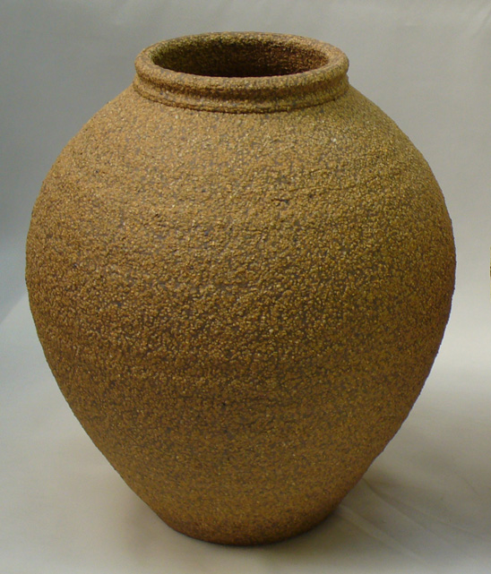
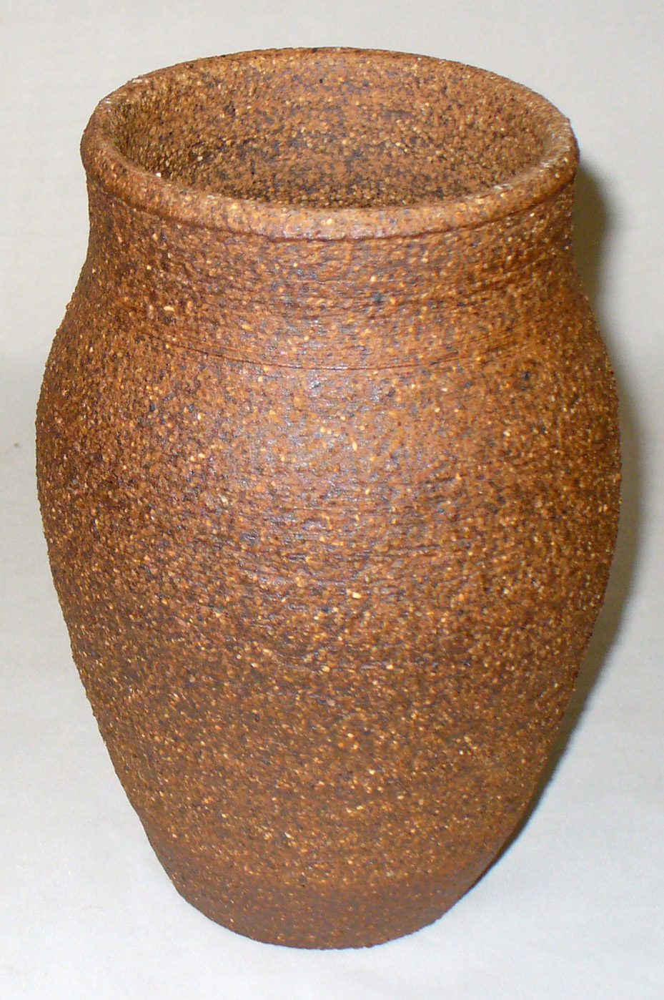

Notes
Grog is a generic term referring to granular material made by grinding brick or other fired ceramic (although it can also be made by crushing certain natural minerals or artificially by calcining mineral and grinding it). Grogs are added to bodies to improve drying performance, reduce drying shrinkage, improve fired abrasion resistance, reduce thermal expansion, reduce fired shrinkage, reduce density, impart visual character, etc. Refractory grogs are available as well as ones with low thermal expansion.
Grog is marketed in designations that refer to the size range of the particles. 20-40 mesh grog means that all material under 40 and over 20 has been graded out to provide a material whose particle size range is between these sizes. A -40 grog (minus 40 mesh) is one that has particles that range all the way from 40 mesh down to fine power sizes. Companies are not always successful in maintaining their materials within the range they specify. In addition, two materials from different companies with the same designation, 20-40 for example, can be quite different since one may have the majority of sizes at the coarse end of the range and the other at the finer end. Companies manufacturing grogs face technical challenges to maximize the amount of usable material (since the grinding process produces alot of particles that are too fine to be used). Coarser grogs are thus more difficult to manufacture. Thus, as you might expect, grogs can be expensive.
Simplistically, grog additions improve drying properties simply because the clay shrinks less and because the individual grog particles terminate micro cracks before they become big cracks. But the porosity of a grog's particles, their surface texture and their shapes are also important in the dynamics of how it affects clay body working and drying properties. The more grog that is added to a body more its plasticity will be impacted (finer grogs have a larger impact). While it might seem that adding a grog with a wide range of sizes to a clay body will produce the maximum benefit, this is not normally the case. Generally, the highest percentage of the largest particles that can be tolerated should be employed, this has the greatest reducing effect on the shrinkage and the least reducing effect on the plasticity. Amazingly, plastic modelling and pottery throwing bodies can still feel quite smooth when they have 20-40 mesh grog particles as long as the body is very plastic. Often silica sand is incorporated with a grog addition to supply another specific range of particle sizes.
It is possible to achieve a pressing or non-plastic forming body with almost zero shrinkage by mixing a body with 90% or more grog. The heavy refractories industry commonly uses a 50% 4-16 mesh, 10% 20-36 mesh, 40% 40-60 mesh mix of grog and a deflocculated slip to bind them together for drying. This principle can be extended to almost any grogged clay body.
Grog is also used to increase pore space in the matrix to enable quicker venting of water vapor during drying and gases of decomposition during firing. A sculpture clay body, for example, typically has 15-25% grog (but can have much more).
Since grog is typically prefired, its does not normally undergo a firing shrinkage (unless the body in which it is a part is fired to a temperature higher than the grog was initially fired at). This means that the more that is put into a recipe, the less the clay shrinks during firing. The effect can be quite dramatic. For example, Plainsman Clays makes a clay body that normally has a fired shrinkage of 5.5%, but with an addition of 15% 20-48 grog and 15% 70 mesh silica sand the fired shrinkage drops to 2.5% while maintaining the same degree of vitrification. Fired properties of grog-containing bodies are also affected by the hardness, color, porosity and impurity content of the grog particles.
It can be tricky to select a commercial grog since their designations can be confusing and they can contain much more fine material than expected. Generally it is best to get samples so that the right material can be selected by comparison testing.
Related Information
Various grogs available in North America

This picture has its own page with more detail, click here to see it.
Examples of various sized grogs from CE Minerals, Christy Minerals, Plainsman Clays. Grogs are added to clays, especially those used for sculpture, hand building and industrial products like brick and pipe (to improve drying properties). The grog reduces the drying shrinkage and individual particles terminate micro-cracks as they develop (larger grogs are more effective at the latter, smaller at the former). Grogs having a narrower range of particle sizes (vs. ones with a wide range of sizes) are often the most effective additions. Grogs having a thermal expansion close to that of the fired body, a low porosity, lighter color and minimal iron contamination are the most sought after (and the most expensive).
Wow, what a surface. How?

This picture has its own page with more detail, click here to see it.
A cone 10R sculpture clay containing 40% ball clay, 10% kaolin, 10% low fire redart (for color and maturity), some quartz and 25% 20x48 grog. This fine grained base produces a body that feels smoother than it really is and is very plastic. It is even throwable on the wheel.
Cone 10R heavily grogged vitreous body that actually throws

This picture has its own page with more detail, click here to see it.
This is a grog clay with 25% Christy Minerals STKO22S grog (20 mesh one size). This piece is about 8 inches tall fired at cone 10R. This body is a Redart, Ball clay base that totally vitrifies to a chocolate brown. But with the added refractory grog it is fairly stable in the kiln and is much more vitreous than other grog bodies. Because it is such a plastic smooth base and because the grog is only one size, this is actually throwable. And it is very resistant to splitting during hand building.
Grog does not always have the intended effect

This picture has its own page with more detail, click here to see it.
These DFAC test disks (drying performance) show that minor additions of grog do not reduce the fired shrinkage of this medium fire stoneware much. Nor do they improve its drying performance. Even at 20% grog, although the addition has reduced drying shrinkage and narrowed the crack somewhat, it is still there and even resembles the zero-grog version. A possible reason is that this body is coarse-particled, having a relatively small total particle surface area. The addition of the grog has significantly increased the total area.
The texture of 33% 20-48 mesh grog in a flameware body

This picture has its own page with more detail, click here to see it.
The body is a 50:50 talc:ball clay mix, it is very smooth and slick so the only particulate is from the grog. In this case the grog addition is being used to make the body resistant to thermal shock failure (for use as a flameware). The body itself is not low expansion nor are the grogged particles. But the sheer quantity of aggregate particles and their size creates an open porous matrix that makes it difficult for cracks to propagate. Of course lots of burnishing, an engobe or a thick glaze layer will be needed to make this surface functional. We could call this the "crow-bar" approach to flameware.
A sculpture body fired from cone 1 (bottom) to 11 and 10R (top)

This picture has its own page with more detail, click here to see it.
Color, density, size and hardness all change as the firing temperature progresses. The color, for example, persists in zones, then changes suddenly. Notice that the colour of the grog particles contrasts more as the temperature increases. This body is completely vitrified at cone 10 and the grog is important for fired stability.
Links